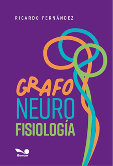

|
 |
Introducción
Este libro tiene el objetivo de unir los aportes de la neurofisiología a la
grafología.
Debemos tener en cuenta que la escritura es la manifestación sobre el papel
de movimientos con contenido consciente e inconsciente, que sobrevuelan la
actividad gráfica.
El lenguaje escrito precisa de movimientos ordenados, que irán
configurando una forma y quedarán grabados en un espacio
cualquiera.
El acto de la escritura es producto de recordar formas que alguna vez se
vieron plasmadas (lóbulo occipital), de conectarlas con los sonidos (lóbulo
temporal), de tomar un útil para reproducir lo que se tiene en mente (lóbulo
parietal) y de coordinar movimientos para llevarla adelante (lóbulo
frontal).
Luria dice que: “la escritura es un acto voluntario, aunque automatizado,
que surge como consecuencia de una actividad cerebral que abarca funciones
relacionadas entre sí. Esto habla de una actividad cerebral que se localiza
en diferentes zonas, especificadas en los hemisferios, que abren la
posibilidad de integrar imágenes que perciben los sentidos y luego son
reproducidas”
La actividad cerebral pone en juego 47 áreas cerebrales diferentes en cada
hemisferio, que deben funcionar tal cual una orquesta sinfónica, para
plasmar la escritura. Si alguno de esos ejecutantes desafina, se producirán
trastornos del lenguaje escrito. La escritura necesita de movimientos
musculares integrados y de una coordinación visomorora, los que están
comandadas por el cerebro del escribiente.
El cerebro envía información a través de las neuronas (eléctrica y química),
una vez que haya recibido la comunicación de las diferentes áreas
involucradas, para que la mano ejecute el movimiento se prodcucirá el acto
de escribir.
La escritura lo que hace es reflejar lo que ocurre en el sistema nervioso
del escribiente.
Se trabajará en este libro definiendo la grafoneurofisiología, el
funcionamiento de las neuronas, El sistema nervioso central (encéfalo y
médula espinal); el sistema nervioso periférico y el sistema nerviso
autónomo (simpático y parasimpático). Cómo se forma la consciencia, el papel
de las emociones y sentimientos (Damasio) en la construcción de la mente. La
relación mente- cerebro. Como el cerebro llega a producir la escritura
(distintos autores). La escritura desde el punto de vista del espacio, la
forma y el movimiento. Finaliza con algunas de las patologías neurológicas y
su manifestación gráfica.
|